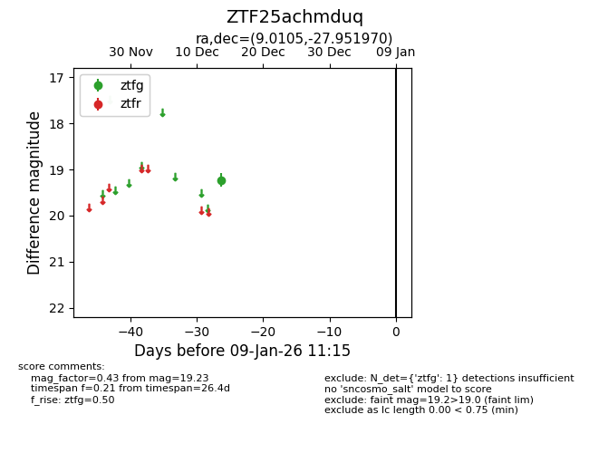
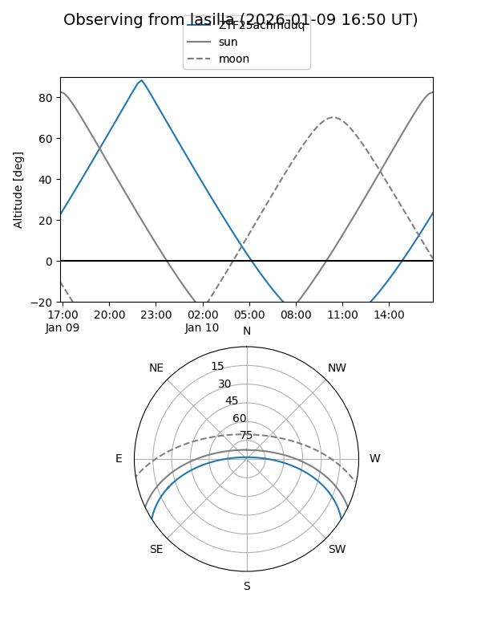
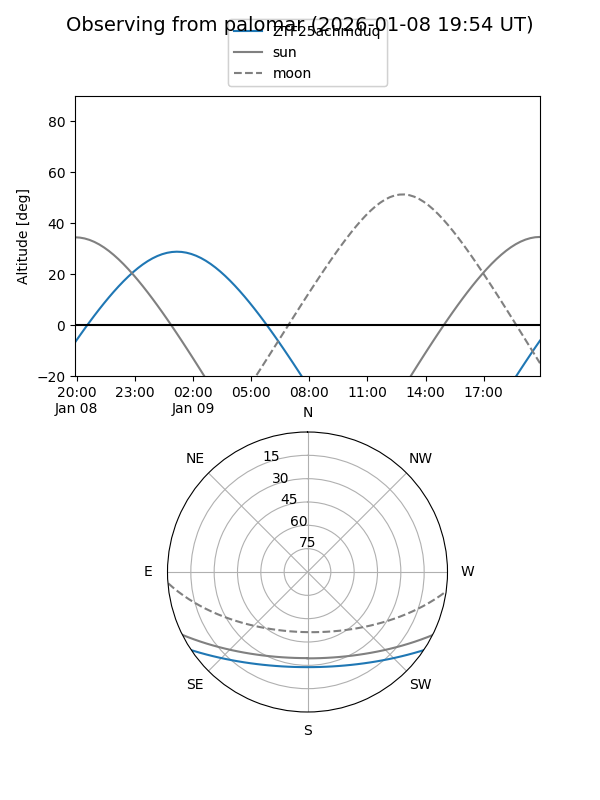

ZTF25achmduq
Target ZTF25achmduq at 2025-12-18 11:18
Aliases and brokers:
FINK: fink-portal.org/ZTF25achmduq
Lasair: lasair-ztf.lsst.ac.uk/objects/ZTF25achmduq
ALeRCE: alerce.online/object/ZTF25achmduq
alt names
ZTF25achmduq (ztf,fink_ztf)
Coordinates:
equatorial (ra, dec) = 9.0105,-27.95197
equatorial (HMS+DMS) = 00:36:02.52,-27:57:07.09
galactic (l, b) = (18.4775,-86.48935)
Photometry
last ztfg=19.23
1 ztfg detections
Lightcurve

Visibility


Additional plots